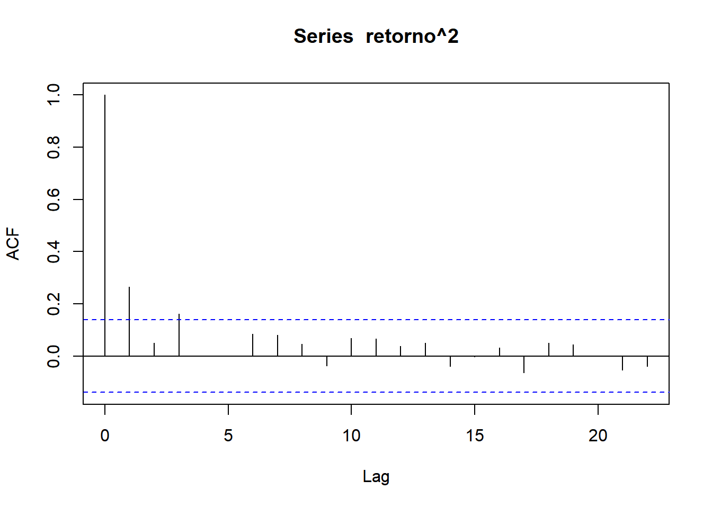
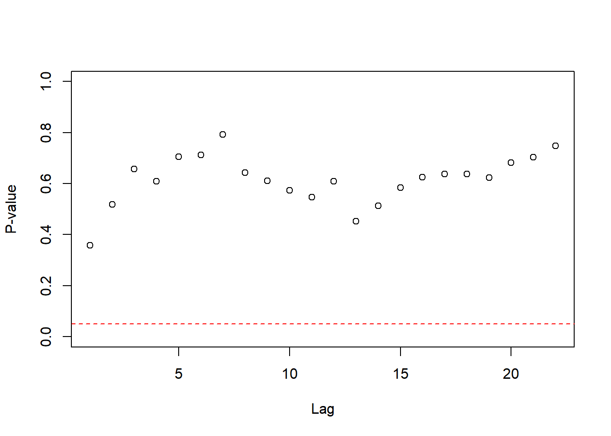

Até o momento, modelamos a média condicional \(E(x_t|\mathcal{D}_{t-1})\), onde foi imposta a restrição de que \(Var(x_t|\mathcal{D}_{t-1})\) era constante.
Neste capítulo, vamos estudar o problema de séries temporais cuja variância condicional muda ao longo do tempos. Esse fenômeno também é conhecido como volatilidade.
14.1 O modelo de heterocedasticidade condicional autorregressiva - ARCH
Seja \(\sigma^2_{t|t-1}\) a variância (ou volatidade) condicional de \(x_t\) com \(x_{t-1}\). O modelo ARCH(1) é definido por
onde \(\omega\) e \(\alpha\) são parâmetros, \(\{\varepsilon_t\}\) é uma sequência de variáveis indepedentes e identicamente distribuídas com média zero e variância um, com \(\varepsilon_t\) independente de \(x_{t-j}\) para \(j=1,2,\ldots\). Como \[\begin{align}E(x_t^2|\mathcal{D}_{t-1})&=E(\sigma^2_{t|t-1}\varepsilon_t^2|\mathcal{D}_{t-1})\\&=\sigma^2_{t|t-1}E(\varepsilon_t^2|\mathcal{D}_{t-1})=\sigma^2_{t|t-1}Var(\varepsilon_t)=\sigma^2_{t|t-1}\end{align}\] teremos que \(x_t^2\) é estimador para \(\sigma^2_{t|t-1}\).
Note que \[Cov(x_t,x_{t-h})=Cov(\varepsilon_t(\omega+\alpha x_{t-1}^2),\varepsilon_{t-h}(\omega+\alpha x_{t-h-1}^2))=0,\] logo, o correlograma não releva qualquer informação sobre esse processo. Contudo, seja \(\eta_t = x_t^2- \sigma^2_{t|t-1}\). É imediato qu \(E(\eta_t)=0\) e \[Var(\eta_t)=E([\sigma_{t|t-1}^2\varepsilon_t^2-\sigma^2_{t|t-1}]^2)\]. Agora, observe que, para $h $, \[\begin{align}Cov(\eta_t,\eta_{t-h})&=Cov(x_{t}^2-\sigma^2_{t|t-1}, x_{t-h}^2-\sigma^2_{t-h|t-h-1})\\&=Cov(x_t^2-\omega-\alpha x_{t-1}^2,x_{t-h}^2 - \omega -\alpha x_{t-h-1}^2)=0,\end{align}\] Logo, \(\{\eta_t\}\) é uma sequência com média zero de variáveis não correlacionadas. Assumindo que \(x_t\) é estacionário, \[Var(\eta_t)=Var(x_t^2 -\alpha x_{t-1}^2)=Var(x^2)(1+\alpha^2).\] temos que \(\eta_t\) é estacionário. Como \[\sigma^2_{t|t-1}=\omega + \alpha x_{t-1}^2\Rightarrow x_t^2=\omega+\alpha x_{t-1}^2+\eta_t,\] se \(x_t\) é um ARCH(1), então \(x_t^2\) é um processo AR(1). Assumindo que \(x_t^2\) é um processo estacionário, teremos que
\[E(x_t^2)=\omega + \alpha E(x_{t-1}^2)\Rightarrow \sigma^2=\omega + \alpha\sigma^2,\] logo, a variância estacionária é dada por \[\sigma^2=\frac{\omega}{1-\alpha},\] o que implica que \(\alpha\in[0,1)\).
O principal uso do modelo ARCH é para a previsão das variâncias condicionais futuras, dada por \[\sigma_t^2(h)=E(x_{t+h}^2|\mathcal{D}_t).\] Para \(h=1\) no modelo ARCH(1) teremos
\[\sigma_t^2(1)=\omega+\alpha x_t^2=(1-\alpha)\sigma^2+\alpha x_t^2,\] que é a média ponderada entre a estimativa \(x_t\) para \(\sigma^2_{t|t-1}\) e a variância estacionária. A previsão para \(h>0\) qualquer no modelo ARCH(1) é dada por
O modelo ARCH(\(q\)) é dado por \[\begin{align}x_t&=\sigma_{t|t-1}\varepsilon_t\\\sigma_{t|t-1}&=\omega + \sum_{j=1}^q \alpha_j x_{t-j}^2.\end{align}\]
14.2 O modelo de heterocedasticidade condicional autorregressiva generalizado (GARCH)
A generalização do modelo ARCH adiciona variâncias condicionais defasadas, gerando no modelo
\[\begin{align}x_t&=\sigma_{t|t-1}\varepsilon_t\\\sigma_{t|t-1}^2&=\omega + \sum_{j=1}^q \alpha_j x_{t-j}^2+ \sum_{j=1}^p \beta_j\sigma^2_{t|t-j}.\end{align}\] Esse modelo é denotado por GARCH(\(p,q\)) (embora exista na literatura a notação GARCH(\(q,p\)), logo sempre verifique a documentação do programa que você está utilizando para sabera ordem correta de \(p\) e \(q\)). É usual se referir à \(p\) como a ordem do GARCHe à \(q\) como a ordem do ARCH.
Para identificar a ordem do modelo GARCH, considere novamente a transformação \(\eta_t=x_t^2 - \sigma^2_{t|t-1}\). Então,
\[\begin{align}\sigma_{t|t-1}^2&=\omega + \sum_{j=1}^q \alpha_j x_{t-j}^2+ \sum_{j=1}^p \beta_j\sigma^2_{t|t-j}\\
&=\omega + \sum_{j=1}^q \alpha_j x_{t-j}^2+ \sum_{j=1}^p \beta_j(\sigma^2_{t|t-j}+\eta_{t-j})-\sum_{j=1}^p\beta_j\eta_{t-j}\\&=\omega + \sum_{j=1}^q \alpha_j x_{t-j}^2+ \sum_{j=1}^p \beta_jx^2_{t-j}-\sum_{j=1}^p\beta_j\eta_{t-j}.\end{align}\] Considere que \(\alpha_k=0\) para \(k>q\) e \(\beta_k=0\) para \(k>p\). Então, a equação acima se reduz à \[\begin{align}\sigma_{t|t-1}^2&=\omega + \sum_{j=1}^{\max\{p,q\}} (\alpha_j +\beta_j)x_{t-j}^2 -\sum_{j=1}^p\beta_j\eta_{t-j}.\end{align}\] e, somando \(\eta_t\) em ambos os lados da equação acima, teremos \[\begin{align}x_t^2&=\omega + \sum_{j=1}^{\max\{p,q\}} (\alpha_j +\beta_j)x_{t-j}^2 +\eta_t-\sum_{j=1}^p\beta_j\eta_{t-j},\end{align}\] logo \(x_t^2\) é um ARMA(\(\max\{p,q\},p\)) com deriva. Desse modo, a autocorrelação parcial amostral de \(x_t^2\) deve trazer informações sobre \(\max\{p,q\}\), enquanto que o correlograma deve fazer o mesmo com \(p\). Se \(\max\{p,q\}=p\), veremos posteriormente como obter evidência sobre o valor de \(q\).
Suponha que o modelo GARCH, de \(\{x_t\}\), é estacionário. Então, aplicando a esperança na equação anterior, teremos
\[\begin{align}\sigma^2&=\omega + \sigma^2\sum_{j=1}^{\max\{p,q\}} (\alpha_j +\beta_j)\end{align}\] logo, a variância estacionária será \[\sigma^2=\frac{\omega}{1-\sum_{j=1}^{\max\{p,q\}}(\alpha_j+\beta_j)}\] que é finita se \(\sum_{j=1}^{\max\{p,q\}}(\alpha_j+\beta_j)<1,\) sendo essa uma condição necessária e suficiente para que \(\{x_t\}\) seja estacionária.
A previsão é dada por \[\begin{align}\sigma_t^2(h)&=E\left(\omega + \sum_{j=1}^{\max\{p,q\}} (\alpha_j +\beta_j)x_{t+h-j}^2 +\eta_t-\sum_{j=1}^p\beta_j\eta_{t+h-j}|\mathcal{D}_t\right)\\&=\omega + \sum_{j=1}^{\max\{p,q\}} (\alpha_j +\beta_j)E\left(x_{t+h-j}^2|\mathcal{D}_t\right)\\&=\omega + \sum_{j=1}^{\max\{p,q\}} (\alpha_j +\beta_j)\sigma_{t}^2(h-j)E\left(x_{t+h-j}^2|\mathcal{D}_t\right)\\&=\omega + \sum_{j=1}^{\max\{p,q\}} (\alpha_j +\beta_j)\sigma^2_t(t+h-j)\end{align}\] onde \(\sigma^2_{t}(h-j)=x_{t+h}^2\) se \(h\leq j\).
Vamos construir a função de verossimilhança do modelo GARCH(1,1) (o modelo geral é análogo). Lembremos que
\[\begin{align}x_t&=\sigma_{t|t-1}\varepsilon_t\\ \sigma^2_{t|t-1}&=\omega+\alpha x_{t-1}^2+\beta\sigma^2_{t-1|t-2},\end{align}\] Fixando o valor inicial \(\sigma^2_{1|0}\), teremos que \(x_1\sim\hbox{Normal}(0, \sigma^2_{1|0})\) e, a partir dessa condição, podemos calcular \[\sigma^2_{2|1}=\omega+\alpha x_1^2 + \beta \sigma^2_{1|0},\] logo \(x_2|x_1\sim\hbox{Normal}(0, \sigma^2_{2|1})\). É simples induzir que \[x_t|\mathcal{D}_{t-1}\sim\hbox{Normal}(0,\sigma^2_{t|t-1})\] e podemos escrever a função densidade conjunta de \(x_1,\ldots,x_n\) como \[f(x_1,\ldots,x_n)=f(x_n|\mathcal{D}_{n-1})f(x_1,\ldots,x_{n-1}),\] e, a partir disso, temos a função de verossimilhança para \(\theta=(\omega, \sigma_{1|0}^2, \alpha,\beta)\). Alguns autores fazem \[\sigma^2_{1|0}=\sigma^2=\frac{\omega}{1-\alpha-\beta}.\] As estimativas de máxima verossimilhança são obtidas via maximização numérica.
Os resíduos desse modelo são dados por \[\hat{\varepsilon}_t=\frac{x_t}{\hat{\sigma}_{t|t-1}}\] e, se o modelo estiver adequado, \(\{\hat{\varepsilon}_t\}\) é uma sequência de variáveis independentes e identicamente distribuídas. Infelizmente, o poder o teste de Box-Pierce é baixo contra variáveis não correlacionadas mas dependentes, como é o caso do modelo GARCH. A alternativa é utilizar o teste de McLeod-Li, uma generalização do teste de Box-Pierce. Em geral, ele é apresentado como um gráfico para cada defasagem, onde o modelo ARCH é rejeitado se todos os p-valores são maiores que 5%. As defasagens com p-valores menores que 5% dão evidências sobre a ordem \(q\) do modelo.
14.3 Exemplo: S&P500
Seja \(p_t\) o preço de ação ou um índice de preço. O retorno de uma aplição feita no tempo \(t\) após \(h\) unidades de tempo é definido por \[\frac{p_{t+h}}{p_t}.\] Um mercado saudável possui um retorno entre o tempo \(t\) e \(t-1\) aproximadamente igual a 1. Vamos definir o log-retorno como \[x_t=\log(p_t)-\log(p_{t-1}).\] Desse modo, é esperado que \(x_t\approx 0\). A variância desse tipo de retorno costuma apresentar volatidade. Nesse caso, a variância condicional é uma importante medida de risco (em finanças, ela recebe o nome de Var - Value at Risk) e, quando maior, mais arriscado é o invertimento.
O Standard and Poor’s 500 (S&P 500) é um índice do mercado de ações que reúne as 500 maiores empresas do mundo listadas na NYSE e na Nasdaq, principais Bolsas de Valores dos Estados Unidos. Abaixo, mostramos o log-retorno diário dessa série.
library(gsheet)
Warning: package 'gsheet' was built under R version 4.3.2
Abaixo, vemos o correlograma da série e de \(x^2_t\). Perceba que a primeira mostra que a série é não correlacionada, mas o segundo mostra que os valores de \(\{x_t\}\) não são independentes (se fossem, não haveria autocorrelações significativas para \(x_t^2\)). O correlograma dá indícios de que \(p=1\), enquanto que a autocorrelação parcial dá indícios de que \(\max\{p,q\}=3\). Portanto, um modelo candidato seria GARCH(1,3).
acf(retorno)
acf(retorno^2)

pacf(retorno^2)
Podemos estimar os parâmetros do modelo GARCH através da função garch, no pacote tseries.
require(tseries)
Carregando pacotes exigidos: tseries
Warning: package 'tseries' was built under R version 4.3.3
Registered S3 method overwritten by 'quantmod':
method from
as.zoo.data.frame zoo
mod0 <-garch( retorno, order =c(1,3), trace =F)coefficients(mod0)
Acima, \(a_0=\hat{\omega}\), \(a_i=\hat{\alpha}_i\) e \(b_i=\hat{\beta}_i\).
Abaixo, o gráfico dos resíduos mostra que a volatilidade no final da série diminuiu.
res0 <-residuals(mod0)[-c(1:3)]ts.plot(res0)
O correlograma e o gráfico da função de autocorrelação parcial dos resíduos ao quadrado não apresenta autocorrelação significativa. Já o teste de McLeod-Li rejeita a hipótese de uma estrutura ARCH. Por último, o teste de Shapiro-Wilks não rejeita a normalidade.
require(TSA)
Carregando pacotes exigidos: TSA
Warning: package 'TSA' was built under R version 4.3.2
Attaching package: 'TSA'
The following objects are masked from 'package:stats':
acf, arima
The following object is masked from 'package:utils':
tar
acf(res0^2)
pacf(res0^2)
McLeod.Li.test(y = res0)

shapiro.test(res0)
Shapiro-Wilk normality test
data: res0
W = 0.98636, p-value = 0.0556